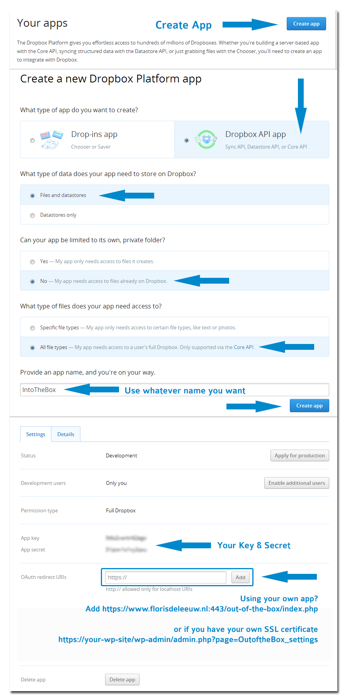
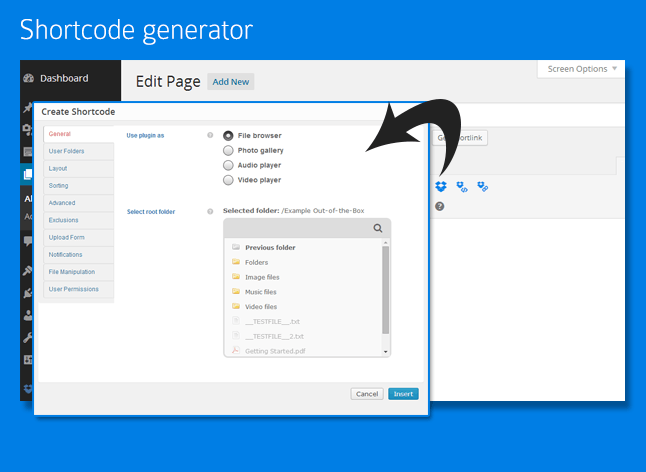

Out-of-the-Box (1.7.3)
Use your Dropbox in WordPress
View, add, delete, rename files & pictures and stream your favorite music and video’s directly from Dropbox
File browser
-
View Dropbox folders & files directly on your site
-
Upload form so users can upload (multiple) files to Dropbox
-
Add, delete and rename files & folders
-
Download files as zip file
-
Search your Dropbox for files & folders
-
If needed you can restrict users so they are only able to use their 'own' Dropbox folder
Gallery
-
Great looking grid with lightbox
-
With or without cropping
-
Folder thumbnails shows whats inside the folder
-
Customize image row height
-
Shuffle images
-
Add, delete and rename images
-
Download images as zip file
Audio & Video
-
Streams audio files directly from your Dropbox with a HTML 5 audioplayer with flash-fallback
-
.m4a (AAC/H.264)
-
.oga (Vorbis/Theora)
-
.mp3
-
Streams video files directly from your Dropbox with a HTML 5 audioplayer with flash-fallback
-
.webmv (Vorbis/VP8)
-
.ogv (Vorbis/Theora)
-
.m4v (AAC/H.264) (always supply a m4v file for cross-browser support)
-
.mp4 (supports most mp4 files)
-
Multiple awesome skins
General
-
Gravity Forms Support: Upload files directly to your Dropbox via a Form
-
Sort files by name, size or modified date
-
Restrict viewing by file extension and file or folder name
-
Restrict uploading files by file extension
-
Restrict which user can see, download, rename or delete your files or upload new ones. You can set the required roles by yourself
-
Secure OAuth 2 authentication
-
Powerful but intuitive shortcode generator
-
WordPress Multi-Site supported
-
Multi language supported
-
Auto-updater
-
And finally... All elements are responsive!
Install Out-of-the-box
-
Upload the contents of the zip file to wp-content/plugins/ and activate the plugin in your admin
panel
- Be sure that the cache directory is writeable. Otherwise your gallery and audio/video player will load very slowly each time.
- Authorize the App on the plugin settings page
- Out-of-the-Box is ready to use!
Use your own Dropbox App
If you don't trust our Dropbox App or if you would limit the permissions, you can create your own App on the
Dropbox website.
- Choose 'Dropbox API app' with 'Files and datastores' and full access.
- You decide if Out-of-the-Box needs to show all file types or specific ones.
- Use whatever name you need.

If you don't have a SSL certificate yet but you have your own IP and need one for free, try
Startssl.com. Follow their instructions how to install a SSL certificate.
- Get your Dropbox key & secret from the App Console and insert these values on the settings page of the Plugin and save these
- Follow (exactly) the instructions on the Out-of-the-Box Settings page
- Authorize the App on the plugin settings page
- Out-of-the-Box is ready to use!
You can use [outofthebox] in a page or post. It is possible to use it multiple times on the same page. You can use a lot of attributes to customize Out-of-the-Box on your blog. To make things easier for you, we added a Add Shortcode button in the MCE editor.

Make sure you have the latest version installed. The version on CodeCanyon isn’t always the latest version. Older versions can have bugs that have already been solved.
- So please insert your purchase code on the settings page of the plugin and use the auto-updater.
Before you ask for support
- First check the FAQ
- Check and search the comment section of the plugin on CodeCanyon, chances are high that your question is already answered
- If you have feature questions or a feature suggestion post it in the comment section of the plugin
- If you can’t find an answer or you have problems integrating the plugin on your website you can submit a ticket via this website
What should you include in your ticket
- Always insert your purchase code of the item you want support for. Tickets without purchase code will not be processed. I am sorry for this strict rule… but it is needed due to the amount of illegal versions of the items
- Add a link to the page where you are having troubles
- To speed things up, please provide an admin login in your email if I have to help integrating the plugin in your website
I need an answer now! How fast do you respond?
- Most of the questions will get a response within 72 hours, complicated questions can take a little longer
- Please keep in mind that I have a full-time job and only give support in my spare time
= 1.7.3 (9 July 15) =
-
Added support for folder upload (Currently only supported by Chrome)
-
Added preview support for: 'doc', 'docx', 'docm', 'ppt', 'pps', 'ppsx', 'ppsm', 'pptx', 'pptm', 'xls', 'xlsx', 'xlsm', 'rtf' and 'pdf'
-
Added download notification for zip downloads
-
Improved notifications, added hook (outofthebox_notification)
-
Improved Upload Feature (removed simpleupload attribute)
-
Improved layout
-
Bug fix deleting multiple files
-
Bug fix max upload size
= 1.7.2 (16 June 15) =
-
Added Inline Preview setting
-
Bug fix opening PDF in Lightbox in IE
-
Bug fix browsing in File Browser
-
Bug fix Gravity Forms integration
= 1.7.1 (25 May 15) =
-
Bug Fix blank settings page
-
Bug fix images in File Browser
= 1.7 (22 May 15) =
-
Added Gravity Forms integration (Missing features? Let me know!)
-
Added iLightBox as Lightbox
-
Added %user_firstname% and %user_lastname% attributes to UserFolder template
-
Added Max Height setting
-
Bug Fix sorting folders
-
Bug Fix template folders
-
Bug Fix notification emails
-
Bug Fix Video Player IE8
-
Bug Fix for weird video dimensions in Video Player
-
Improved performance in general
-
Updated layout File Browser and Gallery
-
Updated Blueimp jQuery File Upload to version 9.9.3
-
Updated qTip2 to version 2.2.1
-
Update Zip Function to 2.0.3
-
Updated Jplayer to 2.9.2
= 1.6.5 (17 January 15) =
= 1.6.4 (6 November 14) =
-
Updated Dropbox API SDK (security reasons)
-
Improved security functions
-
Bug fix in-case sensitive folders
-
Bug fix Shortcode Generator
= 1.6.3 (28 August 14) =
-
Bug fix gallery due to updated Dropbox API
-
Bug fix Zip function
= 1.6.2 (7 August 14) =
-
Added editable shortcodes
-
Added new search option
-
Added purchase button to playlist Media Player
-
Redesign Plugin settings page
-
Redesign ZIP function
-
Updated notification email
-
Bug fix User Roles
-
Bug fix Audio Player playing mp3 files in Chrome
-
Bug fix creating shared links
-
Bug fix User folders
-
Bug fix Skins Audio players
-
Bug fix editable shortcodes
= 1.6.1 (30 June 14) =
-
Redesign of default jPlayer skin and added three new skins
-
Added support for custom jPlayer skins
-
Bug fix Dropbox API - PDFs can again viewed inline.
-
Bug fix creating user folders on user registration
-
Bug fix search function
-
Bug fix Google Analytics integration
-
Bug fix uploading mov files from iOS
-
Updated jQuery.Jplayer to 2.6.0
= 1.6 (16 June 14) =
-
Added: You can now direct link users to folders
-
Added: Select optional template folder for fresh created user folders
-
Added deletion of multiple files at once
-
Added download button for audio/video files
-
Added auto-updater for WP Multisite
-
Added Google Analytics integration for statistics
-
Added notification for deleting files
-
Bug fix removal of start & cancel buttons
-
Updated Shortcode Generator
= 1.5.2 (16 April 14) =
-
Added autoplay option for media player
-
Bug fix folder/file exclusion
-
Bug fix Dropbox case-insensitive folder structure
-
Bug fix qTip popups
-
Bug fix for download function in WP Multisite setup
-
Bug fix gallery for mobile browsers
= 1.5.1 (20 March 14) =
-
Improved layout uploadform
-
Added show more button for image
-
Added support for themes which includes Isotope
-
Bug fix creating zip files in gallery
-
Bug fix Colorbox image grouping
-
Bug fix Cache lock
-
Disabled right mouse click in Out-of-the-Box container
= 1.5 (18 Februari 14) =
-
Added inline embedded preview (Uses Google Doc viewer)
-
Added 'show more' button for Gallery
-
Added simple browser cache
-
Improved layout
-
Bug fix upload function
-
Bug fix CSS dropdown menu
= 1.4.3 (11 Februari 14) =
-
Bug fix foldernames
-
Bug fix authorization
= 1.4.2 (13 Januari 14) =
= 1.4.1 (8 Januari 14) =
-
Bug fix encryption SSL connection Dropbox API
-
Bug fix Insert Links MCE editor
= 1.4 (7 Januari 14) =
-
Added email notification on download/upload
-
Added mp4 support mediaplayer
-
Added include attribute in Shortcode Generator
-
Added direct links in MCE editor
-
Added Auto-Updater
-
Improved cache/thumbnails for large galleries
-
Bug fix fullscreen mediaplayer
-
Bug fix Lightbox gallery
-
Bug fix upload buttons
-
Several small bug fixes
= 1.3.2 (29 November 13) =
-
Don't need to create your own Dropbox App anymore
-
Added Multi-Site support
-
Added new permissions:
-
renamerole=> renamefoldersrole, renamefilesrole
-
deleterole=> deletefoldersrole, deletefilesrole
-
Bug fix upload function
-
Bug fix zipping multiple files
-
Bug fix CSS
= 1.3.1 (22 November 13) =
-
Added overlay for images or PDF files
-
Added some extra options to the Shortcode Generator
-
Bug fixes Gallery
-
Bug fix renaming folders
= 1.3 (2 November 13) =
-
Added zip functionality, choose which files you would like to download or download all files at once
-
Added shortlinks functionality
-
Improved user folders functionality
-
Improved thumbnail function
-
Improved plugin settings page
-
Bug fix shortcode generator
-
Bug fix filenames file browser
-
Bug fix downloading files
= 1.2.2 (14 Oktober 13) =
-
Critical security bug fixed
-
Replaced WordPress Capabilities with Roles. Replaced the following shortcode attributes and their possible values:
-
viewcapability => viewrole
-
downloadcapability => downloadrole
-
uploadcapability => uploadrole
-
renamecapability => renamerole
-
deletecapability => deleterole
-
addfoldercapability => addfolderrole
= 1.2.1 (11 Oktober 13) =
-
Improved Gallery with nice grid. Resizing is done with WordPress own image editor. If WordPress can't resize the image, Dropbox own thumbnail will be used.
-
Added image shuffle
= 1.2 (9 Oktober 13) =
-
Added sort function and sortable columns to the file browser
-
Added search function
-
Improved breadcrumb
-
Reworked video and audio player skin and added responsiveness.
-
Updated shortcode generator
= 1.1.4 (7 Oktober 13) =
-
Critical bug fix uploading files to Dropbox
-
Multiple fixes involving adding/renaming/deleting of files and folders
-
Improved file browsing
-
Removed sessions for Out-of-the-Box information
-
Added some CSS
= 1.1.3 (25 September 13) =
-
Bug fix ‘addfolder’ parameter in shortcode gallery
= 1.1.2 (21 September 13) =
-
Bug fix location cache files
= 1.1.1 (19 September 13) =
-
Improved admin interface
-
Replaced file upload temp directory with WordPress own
-
You can use Out-of-the-Box without SSL-certificate now
= 1.1 (17 September 13) =
-
Added a HTML5 audio/video player with flash-fallback
-
Added gallery
= 1.0 (10 September 13) =
I spent a lot of time on this thing. Nevertheless it's still not finished. I like to improve it wherever I can and appreciate your feedback. I'd be glad to help you if you have any questions relating to this plugin. No guarantees, but I'll do my best to assist.